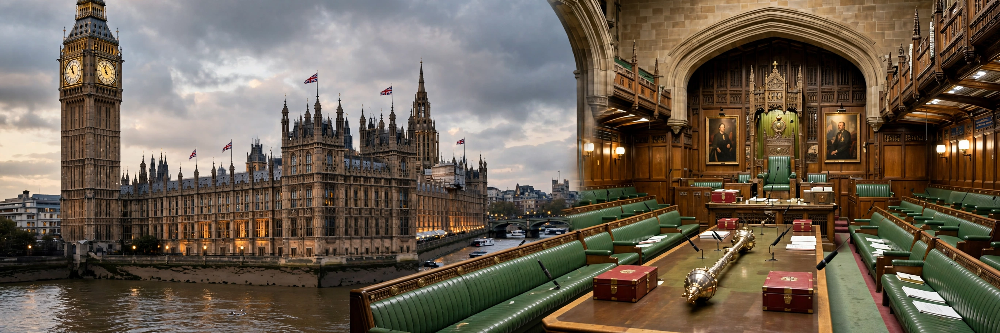

In the United Kingdom, a member of Parliament (MP) is an individual elected to serve in the House of Commons, the lower house of the Parliament of the United Kingdom.

| Member of Parliament | |
|---|---|
| Number | 650 |
| Term | Up to 5 years |
| Election | First-past-the-post |
MPs represent constituents, debate and vote on legislation, scrutinise the government, and sit on select committees. They hold surgeries in their constituencies.
There are 650 MPs, each representing a single-member constituency. General elections use first-past-the-post. Since the Dissolution and Calling of Parliament Act 2022, parliaments last up to five years.
Candidates must be 18 or over and a British, Irish, or qualifying Commonwealth citizen. Certain office-holders are disqualified. MPs receive a salary and expenses regulated by IPSA.